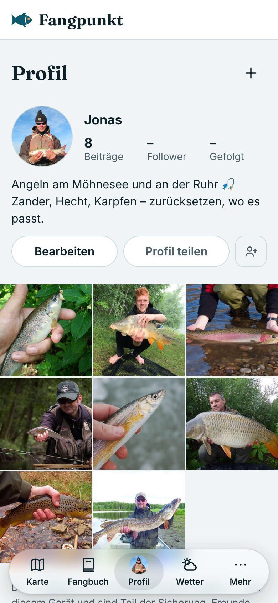

FangpunktIntern
FangpunktIntern
1 · Wo finde ich es?
Profil – mitten in der Leiste
Das Symbol ist das eigene Profilbild. Oben Name, Zahlen und Text, darunter die Beiträge.
2 · Neuer Beitrag
Einen Fang posten
„+“ oben rechts
Mit Fang verknüpfen – die Fangfotos kommen als Kopie mit
Text schreiben, sichtbar für Freunde oder Alle
„Posten“ – der Beitrag steht oben im Raster
3 · Reaktionen
Gefällt mir und Kommentare
Daumen hoch statt Herz
Kommentare im Fenster von unten, mit Emoji-Leiste
Unter dem Beitrag: Link zum verknüpften Fang
4 · Kommt mit dem Konto
Teilen und Freunde: demnächst
„Profil teilen“ und „Freunde hinzufügen“ zeigen vorerst einen Hinweis. Follower und Gefolgt stehen auf „–“.
5 · Bearbeiten
Profilbild, Name, Über dich
Der Text darf bis zu 300 Zeichen lang sein.
Neu: Profil
Stand und nächste Schritte
Fertig
- ✓Leiste: Karte · Fangbuch · Profil · Wetter · Mehr, Statistik als Reiter im Fangbuch
- ✓Beiträge mit Fotos, Text und verknüpftem Fang
- ✓Gefällt mir und Kommentare – vorerst nur die eigenen
- ✓Alles bleibt auf dem Gerät und ist Teil der Sicherung
Offen
- ○Konto (Freunde, Follower, Teilen) – noch nicht freigeschaltet
- ○Sichtbarkeit Freunde/Alle wirkt erst mit dem Konto
Fotos: eigene Aufnahmen. Profil „Jonas“, Texte und Daten im Video sind Beispieldaten.